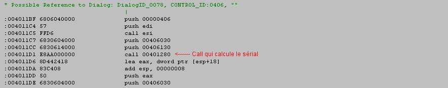
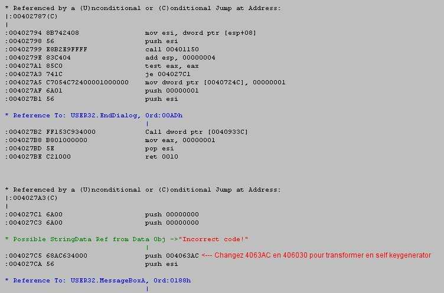

Intro
Nous allons aborder ici les keygenerators. Pour ceux qui ne savent pas ce que c'est, ce sont des petits programmes où vous rentrez votre nom et le sérial officiel du soft correspondant s'affiche. Il ne vous reste plus qu'ensuite à vous enregistrer dans le soft le plus normalement du monde.
Personellement, je me suis toujours demandé au début comment les mecs qui faisaient les keygens arrivaient à trouver l'algorythme. Et ben on verra qu'il y a 2 manières au moins, encore que si la 1ère marche, c'est que le programmeur du soft ne s'est vraiment pas foulé!!!
Ce tut sur les keygens est en 2 parties. Dans la 1ère, on va transformer notre bon vieux Startclean (je suis sûr qu'il y a des nostalgiques parmis vous à qui il a manqué!! :p) en son propre keygen de manière assez surprenante mais au combien simple et efficace! Dans la 2ème partie, on va étudier le source en asm pour en déduire l'algorythme de calcul du sérial. On reprogrammera ensuite cet algorythme en pascal pour faire notre propre keygen.
Vous êtes prêt?! Alors, on y va :o)
Outils nécessaires : Softice, Wdasm, Hexedit
On reprend donc notre petit Startclean :). Quand vous vous enregistrez avec un sérial bidon, une messagebox apparait avec le message d'erreur suivant : "Incorrect code!" (cf. Memento 1). Ce serait-il pas cool si à la place de ce vilain message, Startclean nous affichait le bon sérial sur un plateau !??!?! :)) Et bien oui, c'est possible! Mais comment?!? Dans le Memento 2, vous avez appris à choper un sérial avec Softice. L'idée est de remplacer le code asm du message d'erreur par celui qui contient le bon sérial.
Cela se fait en deux étapes : on chope le code asm qui contient le bon sérial sous Softice, puis on remplacera le message d'erreur sous Hexedit.
Donc dans Startclean, vous vous enregistrez, pour moi ce sera Anubis / 12345, puis vous faites ctrl+D pour rentrer dans Softice, vous posez le bpx hmemcpy et vous faites F5 pour sortir. Vous validez votre code dans Startclean en appuyant sur Ok et aussitôt Softice apparait.
A ce moment, faites F5 une fois pour valider le sérial bidon que vous avez rentré, puis F12 quelques fois (on passe les Bozo et compagnie) pour arriver là :

Le call 00401280 est la routine qui fabrique le sérial à partir de notre nom. Dans la 2ème partie de ce tut, on plongera dedans, mais pour l'instant on le passe en faisant F10. Aussitôt, les registres (eax, esi, ...) s'allument de furie. Regardez eax : on voit "eax = 00406030" et si on fait un d eax, on obtient notre sérial officiel. Et la valeur hexa du registre eax est le fameux code que l'on cherche : 00406030. Autrement dit, notre sérial est stocké dans une adresse mémoire représentée par cette valeur 00406030. Si plus tard je veux manipuler mon sérial, je n'aurai qu'à le faire en utilisant cette adresse 00406030!

En 4027C5, push 004063AC nous affiche le fameux "Incorrect code!". Pour le voir apparaitre, il vous suffit de faire un d 4063AC sous Softice (mais comme je viens juste de vous dire de le fermer, ben.. croyez moi sur parole ;) ). On veut donc on veut remplacer "Incorrect code!" par notre sérial, c'est à dire (en langage assembleur) push 004063AC par push 00406030. Pour ce faire, regardez la correspondance en hexadécimal (j'ai mis des couleurs pour mieux voir la construction) :
push 004063AC
donne 68AC634000
donc
push 00406030
donnera 6830604000
Il ne vous reste plus qu'à prendre un éditeur hexadécimal
pour effectuer la modification. Vous ouvrez Startclean
dans l'éditeur hexa, vous lancez une recherche sur 68AC634000,
et vous faites le changement (n'oubliez pas de sauvegarder!).
Maintenant, retournez à Startclean et enregistrez-vous avec
un sérial bidon et voyez le résultat :
|
- avant - |
- après - |
Voila, la message box n'affichera plus "Incorrect code!" (push 004063AC), mais notre sérial (push 00406030). Au passage, vous pourrez également enregistrer tous vos potes, le sérial correspondant sera affiché à chaque fois ;)
Conclusion
Voilà! Vous avez vu qu'en modifiant simplement l'adresse du message d'erreur, on transforme de manière surprenante le logiciel. Je tiens à faire un petit commentaire ici : toutes les techniques de Cracking que l'on rencontre à travers les Mementos constituent une excellente introduction au Reverse Engineering (ou RE). Le RE nous permet de complètement transformer un soft dont on n'a pas les sources (ajouts de menus suplémentaires, modifications de fonctions, suppression des bugs...). Pour faire une "comparaison" : avec le Cracking, vous apprenez à lire (lire dans le source décompilé en asm, lire dans l'execution du prog sous Softice...), avec le RE vous apprendrez à écrire. C'est l'arme absolue, et je ne citerai qu'un exemple célèbre : MoRE (Greetz to you people!).